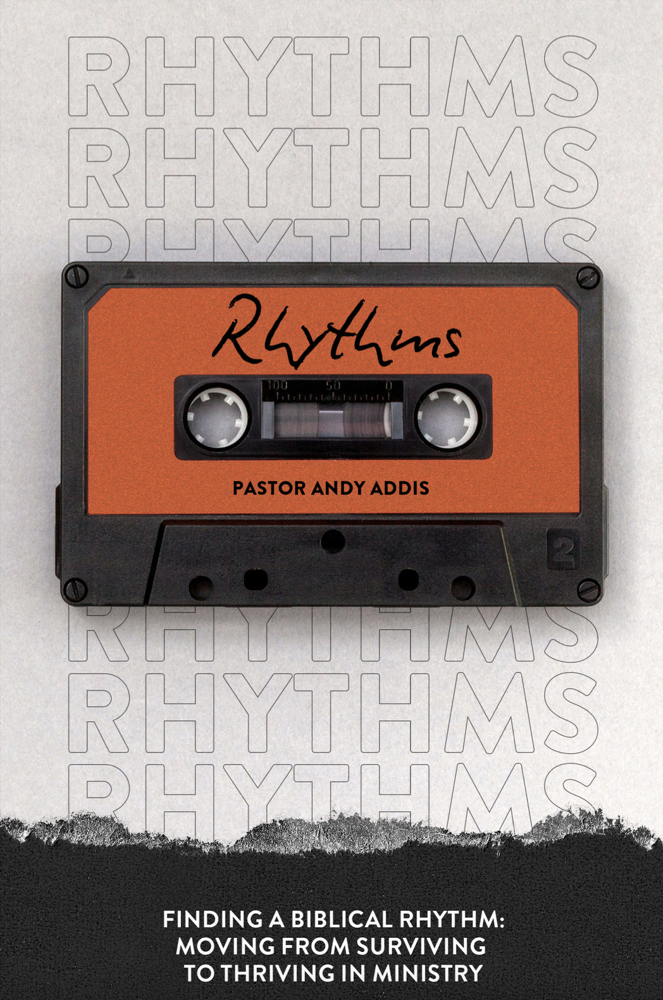

THE RHYTHMS OF
RENEWAL
MOVING FROM SURVIVING TO THRIVING
Barna Group
late 2021
of U.S. pastors had thought about quitting full-time ministry in the previous year.
RECOGNIZING THE TERRAIN
WHAT WE SAY
- It takes hard work
- Hard work pays off
- Sacrifice is sanctified
- It’s my responsibility
- It’s just a season
- Give it all
WHAT WE MEAN
- Effort is most important
- Success depends on me
- God wants me to do this
- No one else can
- No idea when this ends
- Overwork and burnout are expected
THE STORY
CROSSPOINT,
ME AND A PLAN
— 1 —
COPING WITH THE WEIGHT
APPROACH
- Breaks
- Balance
- Delegation
- Rhythm
RESULT
- Band-Aid fix
- You aren’t that good
- Only works on paper
- Long-term Biblical solution
GENESIS 2:1–3
A BIBLICAL RHYTHM IS ABOUT REST
1 Thus the heavens and the earth were finished, and all the host of them. 2 And on the seventh day God finished his work that he had done, and he rested on the seventh day from all his work that he had done. 3 So God blessed the seventh day and made it holy, because on it God rested from all his work that he had done in creation.
EXODUS 20:8–10
A BIBLICAL RHYTHM OF REST IS REQUIRED
8 “Remember the Sabbath day, to keep it holy. 9 Six days you shall labor, and do all your work, 10 but the seventh day is a Sabbath to the LORD your God. On it you shall not do any work, you, or your son, or your daughter, your male servant, or your female servant, or your livestock, or the sojourner who is within your gates.”
EXODUS 20:11
A BIBLICAL RHYTHM OF REST IS REQUIRED
11 For in six days the LORD made heaven and earth, the sea, and all that is in them, and rested on the seventh day. Therefore the LORD blessed the Sabbath day and made it holy.
MARK 2:27–28
A BIBLICAL RHYTHM OF REQUIRED REST IS FOR YOU
27 And he said to them, “The Sabbath was made for man, not man for the Sabbath. 28 So the Son of Man is lord even of the Sabbath.”
A FRAMEWORK FOR RENEWAL
4 KEY AREAS TO
ESTABLISH RHYTHM
- Annual
- Regular
- Weekly
- Daily
Changes may need to be implemented slowly and individually.
ANNUAL RHYTHM
TAKE 1–3 WEEKS
⅓ Rest
⅓ Study
⅓ Planning
REGULAR RHYTHM
TAKE 1 WEEKEND
EVERY 7 WEEKS
Be “normal” and create one week’s margin.
WEEKLY RHYTHM
PROTECT ONE DAY
TO HONOR THE SABBATH
Set it apart and make it different from other days.
DAILY RHYTHM
PROTECT A DAY PART
FOR YOU AND YOUR FAMILY
Morning, afternoon or evening.

CONTINUE THE JOURNEY
GET RHYTHMS
Download a free digital copy or purchase the print edition.
ANDYADDIS.COM Navigate to “Digital Library” at the bottom.